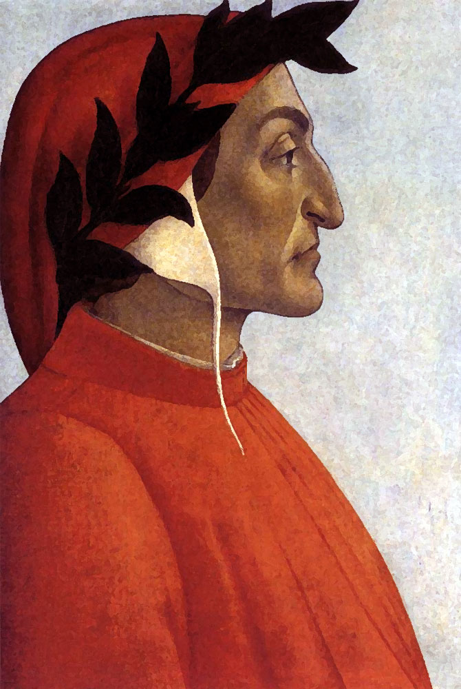

Inferno
Canto I Proemio

mi ritrovai per una selva oscura,
ché la diritta via era smarrita.
Ahi quanto a dir qual era è cosa dura
esta selva selvaggia e aspra e forte
che nel pensier rinova la paura!
Tant’ è amara che poco è più morte;
ma per trattar del ben ch’i’ vi trovai,
dirò de l’altre cose ch’i’ v’ho scorte.
Io non so ben ridir com’ i’ v’intrai,
tant’ era pien di sonno a quel punto
che la verace via abbandonai.
Ma poi ch’i’ fui al piè d’un colle giunto,
là dove terminava quella valle
che m’avea di paura il cor compunto,
guardai in alto e vidi le sue spalle
vestite già de’ raggi del pianeta
che mena dritto altrui per ogne calle.
Allor fu la paura un poco queta,
che nel lago del cor m’era durata
la notte ch’i’ passai con tanta pieta.
E come quei che con lena affannata,
uscito fuor del pelago a la riva,
si volge a l’acqua perigliosa e guata,
così l’animo mio, ch’ancor fuggiva,
si volse a retro a rimirar lo passo
che non lasciò già mai persona viva.
Poi ch’èi posato un poco il corpo lasso,
ripresi via per la piaggia diserta,
sì che ‘l piè fermo sempre era ‘l più basso.
Ed ecco, quasi al cominciar de l’erta,
una lonza leggiera e presta molto,
che di pel macolato era coverta;
e non mi si partia dinanzi al volto,
anzi ‘mpediva tanto il mio cammino,
ch’i’ fui per ritornar più volte vòlto.
Temp’ era dal principio del mattino,
e ‘l sol montava ‘n sù con quelle stelle
ch’eran con lui quando l’amor divino
mosse di prima quelle cose belle;
sì ch’a bene sperar m’era cagione
di quella fiera a la gaetta pelle
l’ora del tempo e la dolce stagione;
ma non sì che paura non mi desse
la vista che m’apparve d’un leone.
Questi parea che contra me venisse
con la test’ alta e con rabbiosa fame,
sì che parea che l’aere ne tremesse.
Ed una lupa, che di tutte brame
sembiava carca ne la sua magrezza,
e molte genti fé già viver grame,
questa mi porse tanto di gravezza
con la paura ch’uscia di sua vista,
ch’io perdei la speranza de l’altezza.
E qual è quei che volontieri acquista,
che ‘n tutti suoi pensier piange e s’attrista;
e giugne ‘l tempo che perder lo face,
tal mi fece la bestia sanza pace,
che, venendomi ‘ncontro, a poco a poco
mi ripigneva là dove ‘l sol tace.
Mentre ch’i’ rovinava in basso loco,
dinanzi a li occhi mi si fu offerto
chi per lungo silenzio parea fioco.
Quando vidi costui nel gran diserto,
«Misereredi me», gridai a lui,
«qual che tu sii, od ombra od omo certo!».
Rispuosemi: «Non omo, omo già fui,
e li parenti miei furon lombardi,
mantoani per patrïa ambedui.
Nacquisub Iulio , ancor che fosse tardi,
e vissi a Roma sotto ‘l buono Augusto
nel tempo de li dèi falsi e bugiardi.
Poeta fui, e cantai di quel giusto
figliuol d’Anchise che venne di Troia,
poi che ‘l superbo Ilïón fu combusto.
Ma tu perché ritorni a tanta noia?
perché non sali il dilettoso monte
ch’è principio e cagion di tutta gioia?».
«Or se’ tu quel Virgilio e quella fonte
che spandi di parlar sì largo fiume?»,
rispuos’ io lui con vergognosa fronte.
«O de li altri poeti onore e lume,
vagliami ‘l lungo studio e ‘l grande amore
che m’ha fatto cercar lo tuo volume.
Tu se’ lo mio maestro e ‘l mio autore,
tu se’ solo colui da cu’ io tolsi
lo bello stilo che m’ha fatto onore.
Vedi la bestia per cu’ io mi volsi;
aiutami da lei, famoso saggio,
ch’ella mi fa tremar le vene e i polsi».
«A te convien tenere altro vïaggio»,
rispuose, poi che lagrimar mi vide,
«se vuo’ campar d’esto loco selvaggio;
ché questa bestia, per la qual tu gride,
non lascia altrui passar per la sua via,
ma tanto lo ‘mpedisce che l’uccide;
e ha natura sì malvagia e ria,
che mai non empie la bramosa voglia,
e dopo ‘l pasto ha più fame che pria.
Molti son li animali a cui s’ammoglia,
e più saranno ancora, infin che ‘l veltro
verrà, che la farà morir con doglia.
Questi non ciberà terra né peltro,
ma sapïenza, amore e virtute,
e sua nazion sarà tra feltro e feltro.
Di quella umile Italia fia salute
per cui morì la vergine Cammilla,
Eurialo e Turno e Niso di ferute.
Questi la caccerà per ogne villa,
fin che l’avrà rimessa ne lo ‘nferno,
là onde ‘nvidia prima dipartilla.
Ond’ io per lo tuo me’ penso e discerno
che tu mi segui, e io sarò tua guida,
e trarrotti di qui per loco etterno;
ove udirai le disperate strida,
vedrai li antichi spiriti dolenti,
ch’a la seconda morte ciascun grida;
e vederai color che son contenti
nel foco, perché speran di venire
quando che sia a le beate genti.
A le quai poi se tu vorrai salire,
anima fia a ciò più di me degna:
con lei ti lascerò nel mio partire;
ché quello imperador che là sù regna,
perch’ i’ fu’ ribellante a la sua legge,
non vuol che ‘n sua città per me si vegna.
In tutte parti impera e quivi regge;
quivi è la sua città e l’alto seggio:
oh felice colui cu’ ivi elegge!».
E io a lui: «Poeta, io ti richeggio
per quello Dio che tu non conoscesti,
a ciò ch’io fugga questo male e peggio,
che tu mi meni là dov’ or dicesti,
sì ch’io veggia la porta di san Pietro
e color cui tu fai cotanto mesti».
Allor si mosse, e io li tenni dietro.